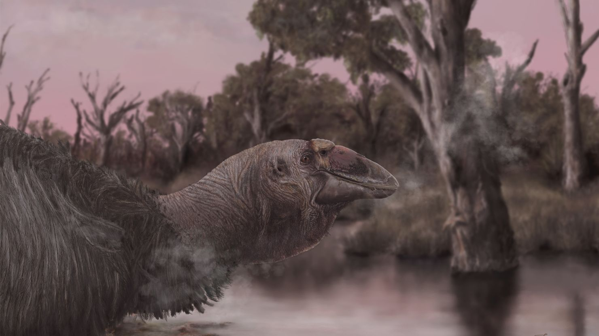

NEW LOOK FOR THUNDER BIRDS
An interesting new study has revised what we know about prehistoric giant birds that inhabited Australia. The members of the family Dromornithidae, also known as the "thunder Birds" were well-known for growing to huge sizes, reaching up to 3m in height and lived around 25 million years ago to up to a few thousands of years ago. This new study redefines the skull anatomy of Genyornis newtoni, by analyzing new fossil material. The new research shows that Genyornis had a wide jaw gape, a powerful bite and similar to that of a goose, showing adaptations for a watery habitat.
